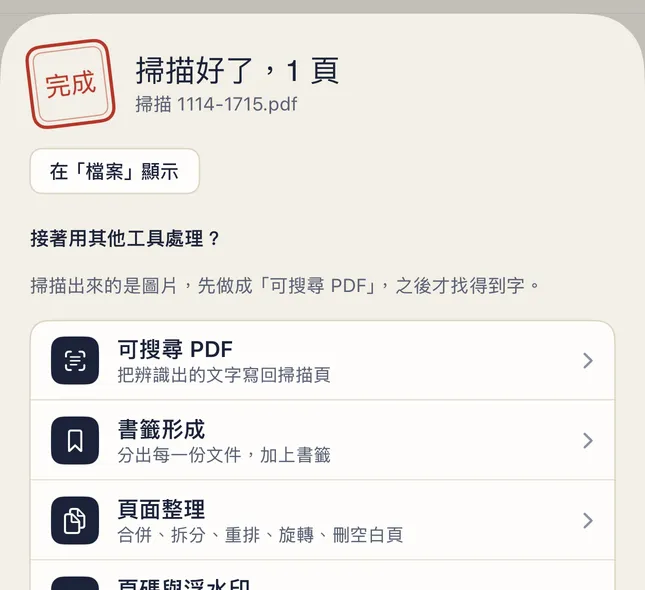
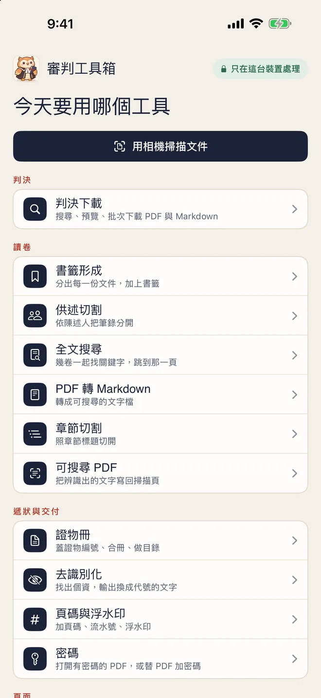
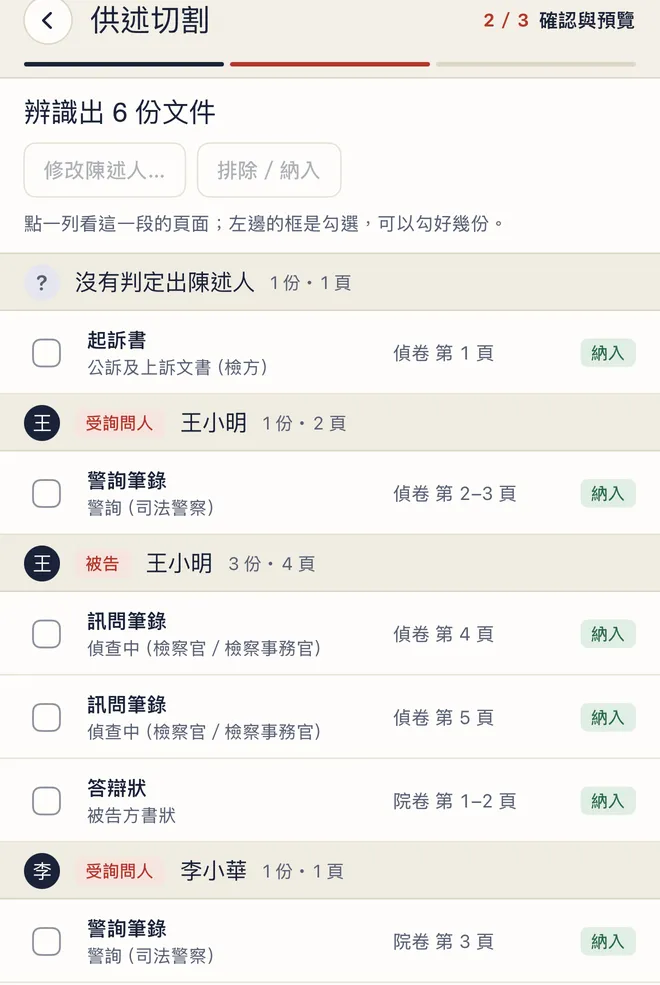
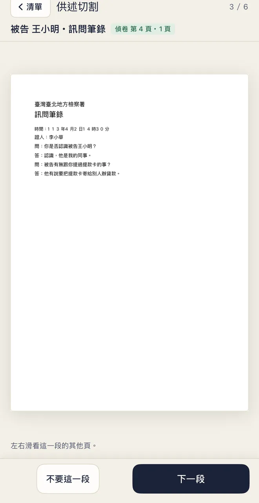
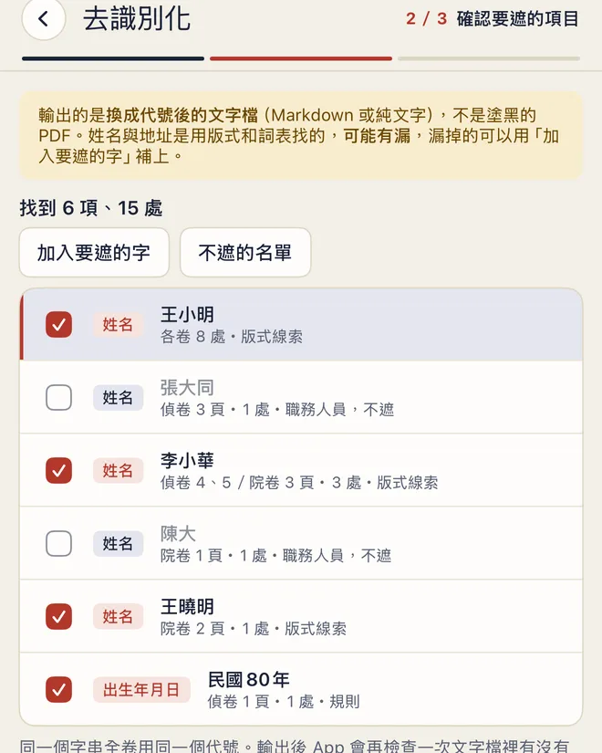
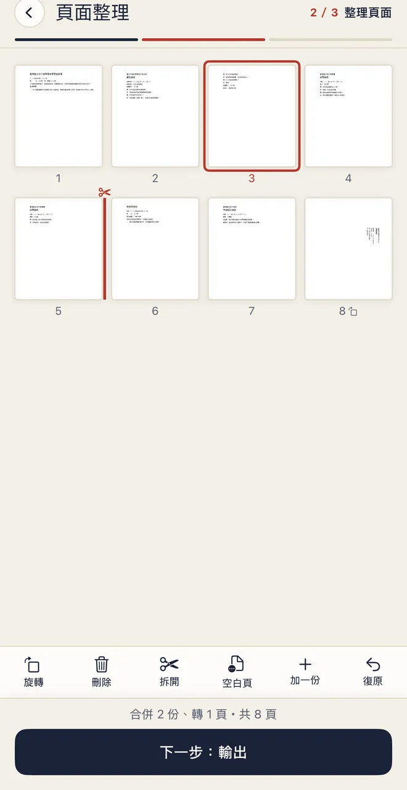
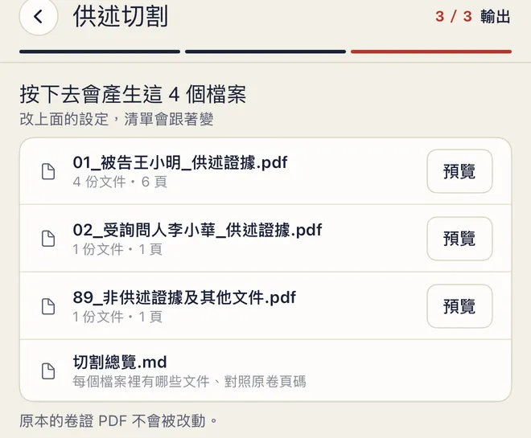

掃描
紙本先拍成 PDF，再接著處理
按首頁最上面的「用相機掃描文件」，拍好的紙本存成 PDF。掃好後 App 會問要不要接著處理：可搜尋 PDF、書籤形成、頁面整理、頁碼與浮水印、證物冊、密碼。

iPhone 版
跟 Mac 版一樣的十三個工具，放在 iPhone 上。開庭前在走廊找某份筆錄、拿到紙本先拍成 PDF，都不用等回到電腦前。主要按鈕在畫面下方，單手按得到。

掃描
按首頁最上面的「用相機掃描文件」，拍好的紙本存成 PDF。掃好後 App 會問要不要接著處理：可搜尋 PDF、書籤形成、頁面整理、頁碼與浮水印、證物冊、密碼。

讀卷｜供述切割
手機上清單和頁面不並排。點清單的一列，推進整頁預覽，左右滑看這一段的其他頁；不要的按「不要這一段」，看完按「下一段」。
清單

點一列之後

讀卷｜全文搜尋
打字就開始找。每筆附卷名、頁碼和前後文，點一筆推進那一頁，命中的地方框起來。
遞狀與交付｜去識別化
找出姓名、身分證字號、電話、地址等個資，逐項確認後輸出換成代號的文字檔。用規則找，一定會有漏，輸出前請逐項確認。輸出的是文字，不是塗黑的 PDF。

頁面｜頁面整理
合併、拆分、旋轉、刪頁、找空白頁。改錯了可以復原。

每個工具
輸出前列出這次會產生的每個檔名。輸出的檔案存在「檔案」App 的「我的 iPhone › 審判工具箱」，每次輸出開一個新資料夾，原本的 PDF 不會被改動。

| 對應裝置 | iPhone（iOS 17 以上） |
|---|---|
| 放入檔案 | 按「選擇檔案…」從「檔案」App 選，或在「檔案」App 裡用審判工具箱打開 PDF；也可以用相機掃描 |
| 輸出位置 | 「檔案」App › 我的 iPhone › 審判工具箱 |
| 文字辨識 | 使用裝置內建的功能，不用另外安裝 |
| 上架地區 | 台灣的 App Store |